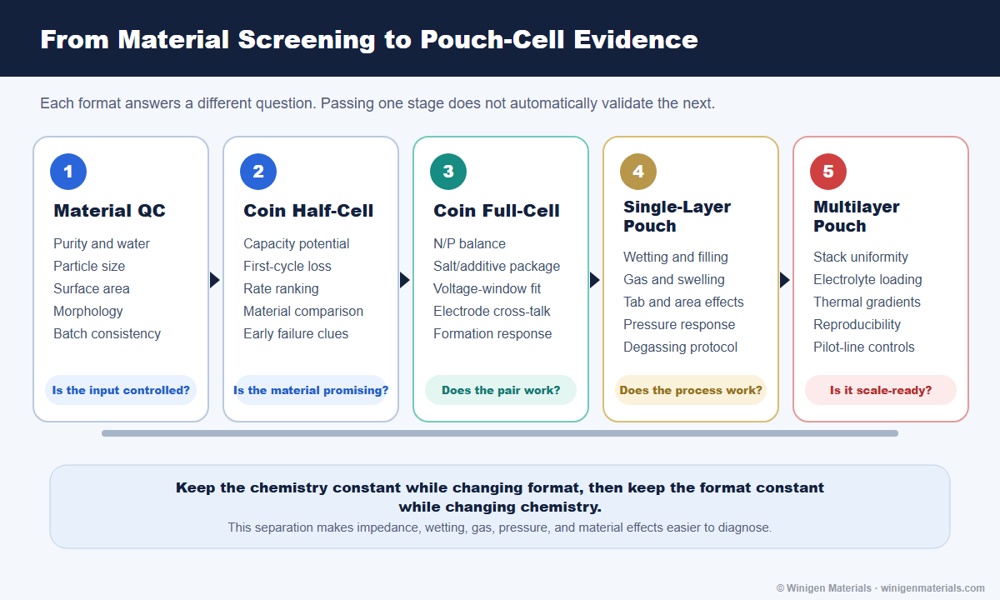

From Coin Cell to Pouch Cell, Part 1: How to Validate Battery Materials Before Scale-Up
Connect material QC, electrolyte wetting, formation, gas, swelling, pressure, impedance, and post-mortem evidence across coin, single-layer pouch, and multilayer pouch cells.